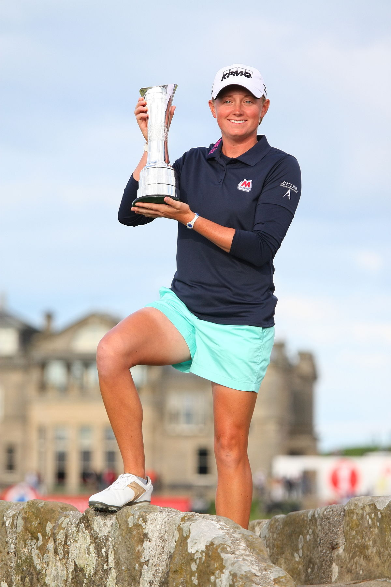

The Origin

Staci started golfing when she was just a young 8 year old. She credits her parents for helping her get through the ups and downs of the
game. In Staci's free time she likes to work out, watch sports, and having spare time to herself
Tournaments and Victories
LPGA Tour Victories (12 wins, 2 majors)
- 2017 Cambia Portland Classic presented by JTBC
- 2014 North Texas LPGA Shootout, ShopRite LPGA Classic, WalMart NW Arkansas Championship Presented by P&G
- 2013 HSBC Women's Champions, RR Donnelley LPGA Founders Cup, RICHO Women's British Open
- 2012 Mobile Bay LPGA Classic, ShopRite LPGA Classic, Navistar LPGA Classic, Mizuno Classic
- 2011 Kraft Nabisco Championship
Career Highlights
- Staci Lewis made it to the Solheim Cup in 2011, 2013, 2015, 2017
- She was GWAA Player of the Year in 2014, LPGA Official Money List Title in 2014, 2013-2014 Vare Trophy winner,
2012 and 2014 Rolex Player of the Year
- Staci also made the 2016 Womens Rio Olympic Team
Career Highlights
- In 2016 Staci Accomplished these things
- 24 events, 24 cuts made
- Ranks 10th on the LPGA's Career Money List and seventh among active players ($11,408,274) entering the 2017 LPGA Tour season
- Spent 264 consecutive weeks from 2011-16 ranked in the top 10 on the Rolex Women's World Golf Rankings
- Record a career best in driving accuracy (80%) which ranked 4th on the LPGA Tour
- In 2015 She had 14 top-10 Finishes
- She has also done many other amazing things in past years
Fun Facts about Staci Lewis
- She is 5’5”
- Started playing golf at the age of 8.
- From the age of 11, Lewis wore a back brace 18 hours per day for 7-1/2 years to correct curvature in her spine from scoliosis,
removing it only to play golf.
- Had back surgery during her senior year of high school and red shirted for one season before joining the University of Arkansas
women’s golf team.
- Her birthday is on February 16, 1985
- Staci Lewis Turned Pro in 2008